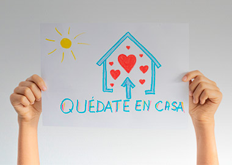
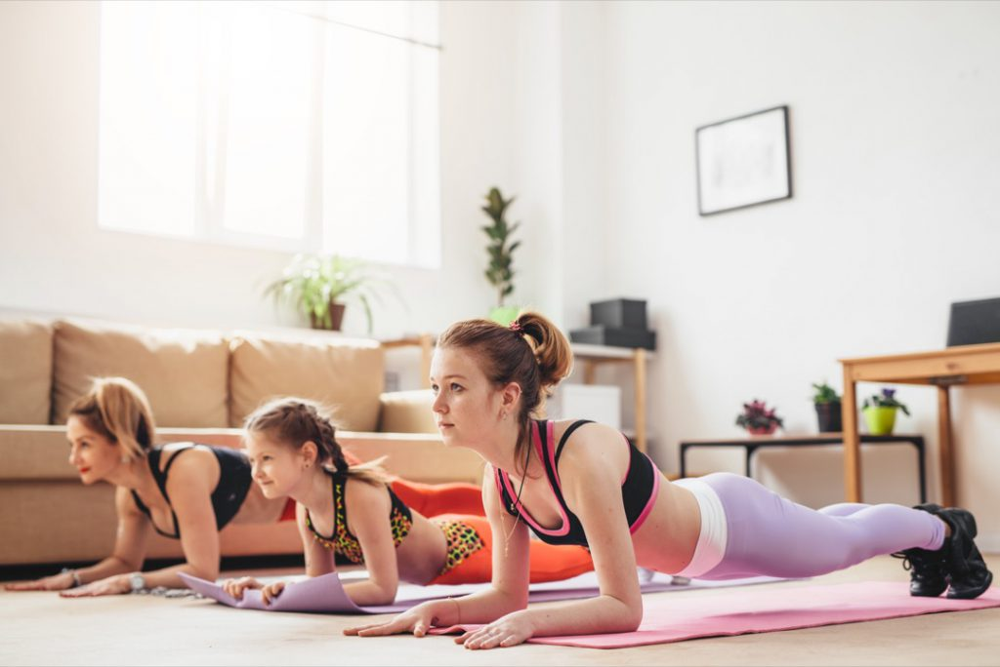

#YoMeQuedoEnCasa
Coronavirus: cosas para hacer en casa
La cuarentena es una oportunidad única y, probablemente, irrepetible para realizar actividades que en circunstancias normales perdemos de vista o no tenemos tiempo para realizar.
Cuantas veces hemos dicho que no empezamos a hacer ejercicio porque no tenemos tiempo? Que no cocinamos por falta de tiempo? Que no comenzamos esa saga de libros tan deseada por tanto trabajo? Vamos a encontrarle el lado positivo a todo esto y aprovechar el encierro obligatorio.
La cuarentena nos puede generar una desarmonía interna y llevarnos a sentir incoherencia entre lo que querríamos hacer y lo que se requiere que hagamos. Podemos sentir enorme necesidad de salir a la calle y seguir realizando actividades habituales en nuestra cotidianidad, pero también sabemos que la situación dicta que estemos en casa.
Por ello, siendo la cuarentena un deber y una medida indiscutible e inevitable de salubridad personal y colectiva, surgen muchas preguntas de las cuales quiero destacar la siguiente: ¿Cómo podemos manejarla bien en favor de nuestra salud física y mental y de nuestro bienestar integral?
Recetas para cocinar con lo que tenes en casa
2 recetas faciles de hacer para salir de la cotidianidad que conlleva estar obligado a comer y cocinarse siempre en casa.
Ejercicios para hacer en cuarentena
Aprovechando que tenemos tiempo de sobra libre en casa, les traemos algunos ejercicios para realizar actividad fisica con lo que uno tiene en el hogar y no perder la forma.
